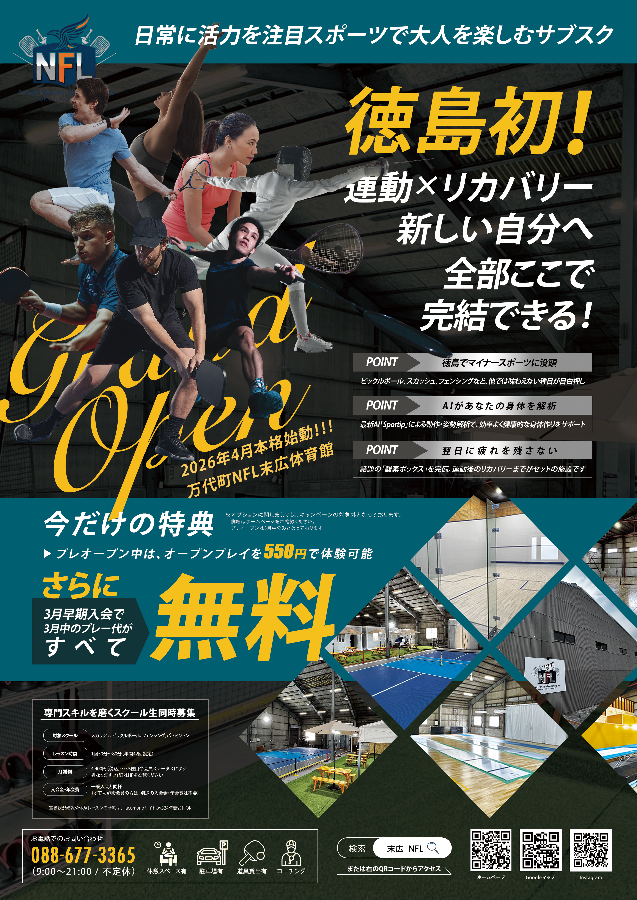
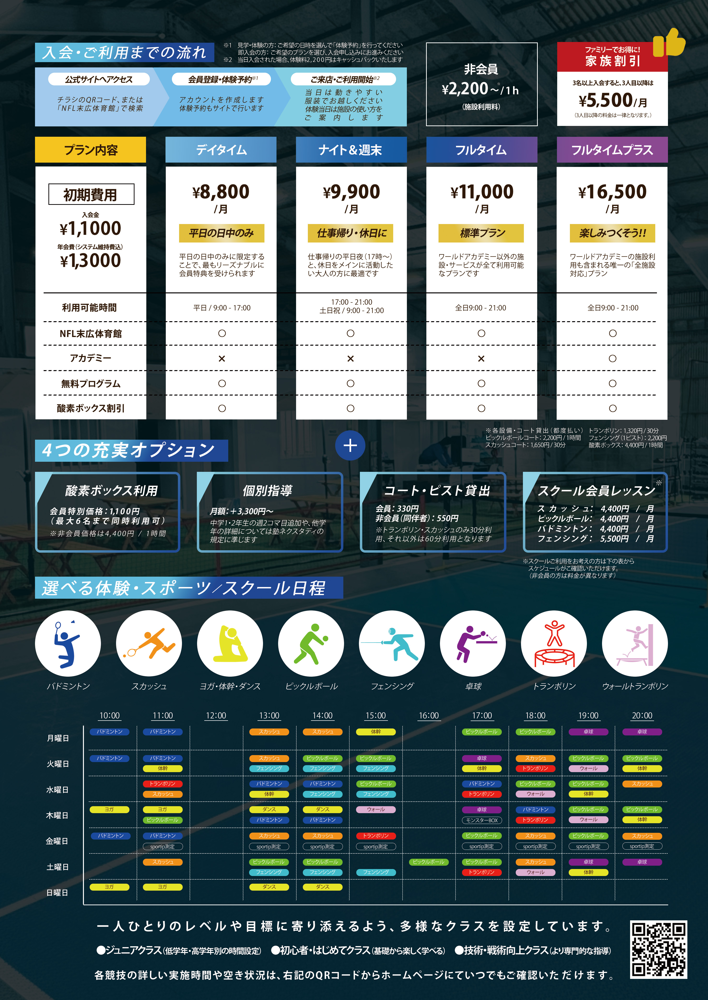

作品を チェック
- 概要
- 徳島県万代町にあるパーソナルジム兼スポーツ体験施設のB４チラシ制作
- 使用ツール
- Ps
- 制作期間
- １週間程度
- デザインの意思入れ
-
- 全体構成
-
スポーツジム、パーソナルジム、またスクールの３種からスポーティなテイストにしたかった点と４月からのグランドオープンということで”どのような施設でどんなことができるのか”、”オープン記念限定キャンペーン”をわかりやすく認識してもらえるようにデザインすることを意識しました。
表面は施設の大枠な情報とキャンペーン、雰囲気を伝える構成。裏には具体的な情報をまとめました。
投函用チラシのデザインなのでファーストルックに迫力を感じてもらい興味を示してもらえるように各スポーツの写真や『徳島初！』というワードを強調しました。 - カラー／配色
-
全体的に情報量が多くなるので背景色はなるべくシンプル／落ち着いたカラーを選択し、文字やセクション毎のカラーを発色強めのカラーを選択しました。
マストで見てほしい箇所やタイトル、似たような情報のなかで比較しなければならないものにはグラデーションを使い、直感的にできるように心がけました。 - 詳細ルック
-
マップや住所、HP、SNSなど最終的にスマホで確認するものに関しては情報整理してスッキリしたレイアウトにしたい点と、瞬時に情報にアクセスできるようにQRコードに落とし込みました。
入会プランやスクールの種類なども選択しが非常に多く複雑なものは投函エリアのペルソナを意識して、需要のありそうなものに絞って記載。
裏面のスクール日程と競技アイコンのカラーを連動させて認識しやすくしました。

